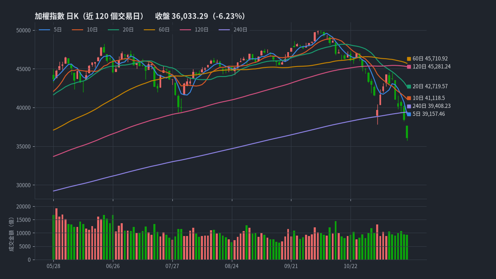
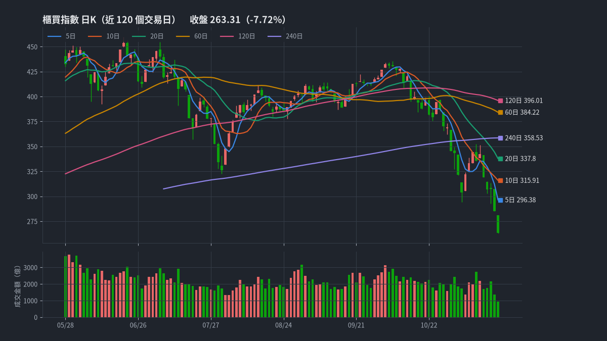
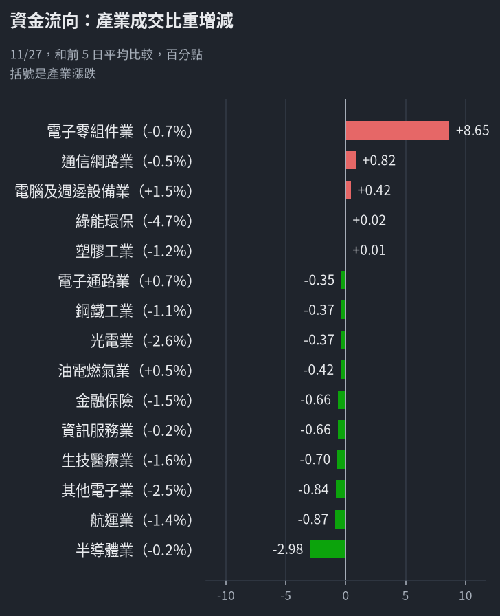
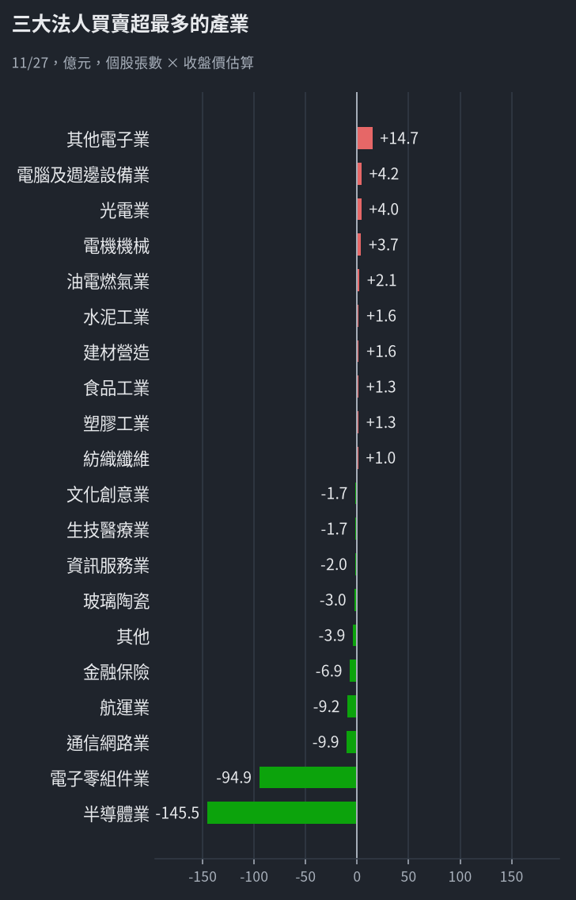

📈 盤勢解析 2026-11-20（五）
加權指數
36,033.29
-2,393.60（-6.23%）
櫃買指數
263.31
-22.02（-7.72%）
外資買賣超
-18.3 億
上市＋上櫃
三大法人
-439.1 億
上市＋上櫃
P/C 未平倉比
30.1%
前一天 41.0%
外資台指期
-97,863 口
比前一天 +1,356
資料日期：指數 11/20｜法人 11/20｜期交所 11/20｜產業 11/20
今日盤勢
周五台股早盤開低，下跌過程中量能沒有失控，終場收黑K棒，下跌 2,394 點（-6.23%），11/6帶量長紅棒低點37,837失守，價跌量平，短線轉為震盪，均線支撐都已跌破，宜保守看待。
- 觀察周五台股盤面結構，電子股延續近期回檔走勢。
- 電子股短線震盪拉回，權值電子陷入整理，台積電、聯發科、鴻海走弱，下周一(11/23)廣達法說或具關鍵。櫃買市場最終收黑，強勢指標華經、驊宏資、資通。南亞周四(11/19)法說後，周五下跌 9.8%，市場反應不佳。國巨*周四(11/19)法說後，周五下跌 8.2%，市場反應不佳。
重點數據
- 加權指數：36,033.29（-6.23%）；在所有均線之下；價跌量平；在所有均線之下，下方沒有均線支撐
- 櫃買指數：263.31（-7.72%）；在所有均線之下；價跌量縮；在所有均線之下，下方沒有均線支撐
- 外資：現貨賣超 18.3 億、台指期淨未平倉增加 1,356 口（現貨期貨方向不同）
- 選擇權 P/C 未平倉比 30.1%，前一天 41.0%
- 資金流入：半導體業、金融保險、資訊服務業；流出：電子零組件業、塑膠工業、玻璃陶瓷
- 族群：強勢 無；弱勢 copos -9.9%、PA -9.9%、BBU -9.9%
- 融資融券：上市櫃融資餘額 5,681 億，減少 637.0 億；融券減少 12,723 張（11/20）
📅 重大事件
- 今天：雙鴻法說會（15:20）；聯茂法說會（11:00）
- 接下來：11/23（一） 聯電法說會（09:00）；11/23（一） 廣達法說會（09:00）；11/23（一） 南亞科法說會（09:00）；11/23（一） 京元電子法說會（09:00）；11/23（一） 雙鴻法說會（10:00）；11/23（一） 臻鼎-KY法說會（09:00）；11/23（一） 聯茂法說會（13:00）；11/23（一） 旺矽法說會（10:30）；11/23（一） 力積電法說會（11:00）；11/24（二） 國巨*法說會（14:00）；11/24（二） 廣達法說會（09:00）；11/24（二） 友達法說會（10:00）；11/24（二） 欣興法說會（10:00）；11/24（二） 景碩法說會（09:00）；11/24（二） 緯創法說會（09:00）；11/24（二） 群創法說會（11:00）；11/24（二） 聯茂法說會（15:30）；11/24（二） 旺矽法說會（10:00）；11/24（二） 台燿法說會（10:00）；11/24（二） 高力法說會（15:00）；11/25（三） 欣興法說會（14:00）
加權指數 36,033.29 ▼2,393.6（-6.23%）

日K：長黑K、跳空下跌（缺口 37,646.13～38,259.7）（開 37,646.13｜高 37,646.13｜低 35,738.68｜收 36,033.29）
量能：成交金額 9,353 億，是前 5 日平均的 0.96 倍（量平）→ 價跌量平
均線位置：在所有均線之下｜均線交錯
漲跌家數：上漲 17｜下跌 1067｜平盤 12（股票，不含 ETF）
關鍵支撐
- 在所有均線之下，下方沒有均線支撐
- 上方壓力：5日線（週線） 39,157.46（距離 8.0%）
| 均線 | 數值 | 收盤距離 | 均線方向 | 今天 |
|---|---|---|---|---|
| 5日線（週線） | 39,157.46 | -7.98% | ↘ 下彎 | 在下方（壓力） |
| 10日線（雙週線） | 41,118.5 | -12.37% | ↘ 下彎 | 在下方（壓力） |
| 20日線（月線） | 42,719.57 | -15.65% | ↘ 下彎 | 在下方（壓力） |
| 60日線（季線） | 45,710.92 | -21.17% | ↘ 下彎 | 在下方（壓力） |
| 120日線（半年線） | 45,281.24 | -20.42% | ↘ 下彎 | 在下方（壓力） |
| 240日線（年線） | 39,408.23 | -8.56% | ↗ 上揚 | 在下方（壓力） |
資料來源：證交所
櫃買指數 263.31 ▼22.02（-7.72%）

日K：長黑K、跳空下跌（缺口 280.79～284.96）（開 280.79｜高 280.79｜低 262.77｜收 263.31）
量能：成交金額 935 億，是前 5 日平均的 0.51 倍（量縮）→ 價跌量縮
均線位置：在所有均線之下｜均線交錯
漲跌家數：上漲 49｜下跌 802｜平盤 18（股票，不含 ETF）
關鍵支撐
- 在所有均線之下，下方沒有均線支撐
- 上方壓力：5日線（週線） 296.38（距離 11.2%）
| 均線 | 數值 | 收盤距離 | 均線方向 | 今天 |
|---|---|---|---|---|
| 5日線（週線） | 296.38 | -11.16% | ↘ 下彎 | 在下方（壓力） |
| 10日線（雙週線） | 315.91 | -16.65% | ↘ 下彎 | 在下方（壓力） |
| 20日線（月線） | 337.8 | -22.05% | ↘ 下彎 | 在下方（壓力） |
| 60日線（季線） | 384.22 | -31.47% | ↘ 下彎 | 在下方（壓力） |
| 120日線（半年線） | 396.01 | -33.51% | ↘ 下彎 | 在下方（壓力） |
| 240日線（年線） | 358.53 | -26.56% | ↗ 上揚 | 在下方（壓力） |
資料來源：櫃買中心
三大法人買賣超（億元，11/20）
| 外資 | 投信 | 自營商 | 合計 | |
|---|---|---|---|---|
| 上市 | -95.1 | -73.5 | -340.8 | -509.4 |
| 上櫃 | +76.8 | +5.1 | -11.6 | +70.3 |
| 上市＋上櫃 | -18.3 | -68.3 | -352.4 | -439.1 |
上市外資連賣 5 天；近 5 日上市外資合計 -2,186.7 億、三大法人 -3,299.9 億
期貨與選擇權（11/20）
| 台指期 | 淨未平倉（口） | 比前一天 |
|---|---|---|
| 外資 | -97,863 | +1,356 |
| 投信 | +87,599 | -4,192 |
| 自營商 | +282 | +1,737 |
| 三大法人 | -9,982 | -1,099 |
- P/C 未平倉比 30.1%，前一天 41.0%，5 日平均 43.7%；成交量比 79.0%
- 外資買權淨未平倉 +15,155 口（比前一天 +8,061），金額 +10.31 億
- 外資賣權淨未平倉 +755 口（比前一天 +546），金額 +3.03 億
- 買權最大未平倉（12 月合約）：50,000，1,833 口（上檔壓力參考）
- 賣權最大未平倉（12 月合約）：49,800，3,399 口（下檔支撐參考）
族群漲跌（11/20，市值加權）
| 族群 | 今天 | 近5日 | 近20日 | 成交值（倍） | 權值最大 | 檔數 |
|---|---|---|---|---|---|---|
| 觀察名單 | -4.98% | -8.5% | -11.6% | 2.84 | 合騏* | 1 |
| edgeai | -6.24% | -14.8% | -24.5% | 1.08 | 研華、飛捷、振樺電 | 6 |
| 軍工 | -6.54% | -15.6% | -20.8% | 0.68 | 長榮航太、漢翔、原相 | 12 |
| 工業電腦 | -7.57% | -12.8% | -23.0% | 1.31 | 樺漢、研揚、融程電 | 6 |
| 機器人 | -7.91% | -22.1% | -26.6% | 0.89 | 上銀、亞光、台灣精銳 | 19 |
| 被動元件 | -8.54% | -28.8% | -46.2% | 0.86 | 國巨*、禾伸堂、晶技 | 12 |
| 重電 | -8.81% | -16.7% | -26.9% | 1.08 | 華城、東元、士電 | 7 |
| 設備 | -8.86% | -24.3% | -36.7% | 0.73 | 漢唐、中砂、聖暉* | 15 |
| 光通 | -8.98% | -24.7% | -37.4% | 0.57 | 智邦、大立光、貿聯-KY | 16 |
| 連接元件 | -9.28% | -26.6% | -28.7% | 0.42 | 嘉澤、佳必琪、嘉基 | 6 |
| 記憶體 | -9.34% | -26.6% | -37.7% | 1.10 | 南亞科、華邦電、群聯 | 12 |
| 封測 | -9.45% | -25.0% | -35.4% | 0.64 | 日月光投控、京元電子、精材 | 8 |
| IP | -9.60% | -28.4% | -30.2% | 0.39 | 創意、瑞昱、信驊 | 7 |
| 網通 | -9.64% | -18.6% | -28.5% | 0.27 | 華通、昇達科、啟碁 | 6 |
| PCB、ABF、CCL | -9.73% | -32.0% | -43.3% | 0.29 | 南亞、台光電、欣興 | 24 |
| 矽晶圓 | -9.87% | -30.8% | -48.9% | 0.59 | 環球晶、中美晶、台勝科 | 6 |
| 散熱 | -9.88% | -29.1% | -37.1% | 0.13 | 奇鋐、健策、富世達 | 5 |
| BBU | -9.89% | -26.9% | -43.0% | 0.77 | 台達電、光寶科、AES-KY | 8 |
| PA | -9.92% | -32.4% | -31.5% | 0.32 | 穩懋、全新、宏捷科 | 3 |
| copos | -9.94% | -29.5% | -41.0% | 0.66 | 盟立、均華、東捷 | 9 |
成交值（倍）＝族群今天成交值 ÷ 前 5 日平均；族群名單在 config.yaml「族群」
資金流向：產業成交比重（11/20，和前 5 日平均比較）

流入
| 產業 | 成交比重 | 比重增減 | 族群漲跌 | 成交值（億） | 法人買賣超（億） | 成交值最大 |
|---|---|---|---|---|---|---|
| 半導體業 | 49.7% | +9.4 | -7.3% | 4,006 | -118.4 | 台積電、聯發科 |
| 金融保險 | 4.9% | +1.7 | -5.8% | 395 | +19.5 | 中信金、富邦金 |
| 資訊服務業 | 1.7% | +0.7 | +4.8% | 141 | +2.6 | 華經、驊宏資 |
| 航運業 | 1.5% | +0.5 | -6.1% | 120 | +6.6 | 長榮、萬海 |
| 生技醫療業 | 1.4% | +0.5 | -7.8% | 117 | +18.0 | 藥華藥、視陽 |
流出
| 產業 | 成交比重 | 比重增減 | 族群漲跌 | 成交值（億） | 法人買賣超（億） | 成交值最大 |
|---|---|---|---|---|---|---|
| 電子零組件業 | 13.0% | -9.3 | -8.9% | 1,049 | +55.0 | 國巨*、台達電 |
| 塑膠工業 | 1.7% | -1.4 | -9.2% | 137 | +9.7 | 南亞、台塑 |
| 玻璃陶瓷 | 0.4% | -1.3 | -9.8% | 34 | -3.3 | 台玻、和成 |
| 通信網路業 | 3.4% | -1.0 | -6.7% | 278 | +18.6 | 智邦、中華電 |
| 電機機械 | 1.0% | -0.9 | -8.4% | 84 | +13.3 | 大量、上銀 |
法人買賣超最多的產業

| 買超 | 億 | 賣超 | 億 |
|---|---|---|---|
| 電子零組件業 | +55.0 | 半導體業 | -118.4 |
| 光電業 | +44.6 | 鋼鐵工業 | -5.7 |
| 電腦及週邊設備業 | +42.8 | 電子通路業 | -4.3 |
| 金融保險 | +19.5 | 貿易百貨 | -3.5 |
| 通信網路業 | +18.6 | 玻璃陶瓷 | -3.3 |
全部產業
| 產業 | 成交比重 | 比重增減 | 族群漲跌 | 成交值（億） | 法人買賣超（億） | 成交值最大 |
|---|---|---|---|---|---|---|
| 半導體業 | 49.7% | +9.4 | -7.3% | 4,006 | -118.4 | 台積電、聯發科 |
| 金融保險 | 4.9% | +1.7 | -5.8% | 395 | +19.5 | 中信金、富邦金 |
| 資訊服務業 | 1.7% | +0.7 | +4.8% | 141 | +2.6 | 華經、驊宏資 |
| 航運業 | 1.5% | +0.5 | -6.1% | 120 | +6.6 | 長榮、萬海 |
| 生技醫療業 | 1.4% | +0.5 | -7.8% | 117 | +18.0 | 藥華藥、視陽 |
| 數位雲端 | 0.7% | +0.4 | +5.3% | 57 | +3.3 | 中華資安、意藍 |
| 電子通路業 | 0.8% | +0.3 | -6.1% | 66 | -4.3 | 文曄、大聯大 |
| 其他 | 1.2% | +0.3 | -4.6% | 93 | -1.5 | 天品、中租-KY |
| 食品工業 | 0.3% | +0.2 | -4.2% | 25 | +0.9 | 統一、聯華 |
| 鋼鐵工業 | 0.6% | +0.1 | -5.6% | 46 | -5.7 | 大成鋼、中鋼 |
| 紡織纖維 | 0.4% | +0.1 | -4.1% | 33 | +4.8 | 儒鴻、聚陽 |
| 建材營造 | 0.3% | +0.1 | -4.4% | 22 | +0.8 | 興富發、華固 |
| 水泥工業 | 0.2% | +0.1 | -4.7% | 18 | -2.8 | 台泥、亞泥 |
| 汽車工業 | 0.2% | +0.1 | -5.7% | 19 | +0.5 | 和泰車、巨鎧精密-創 |
| 貿易百貨 | 0.2% | +0.1 | -3.5% | 12 | -3.5 | 統一超、潤泰全 |
| 油電燃氣業 | 0.2% | +0.1 | -4.4% | 17 | +3.4 | 台塑化、台汽電 |
| 運動休閒 | 0.2% | +0.1 | -4.8% | 15 | -0.3 | 寶成、美利達 |
| 文化創意業 | 0.2% | +0.0 | -4.6% | 18 | +1.6 | 鈊象、智崴 |
| 橡膠工業 | 0.1% | +0.0 | -4.8% | 7 | -0.6 | 正新、台橡 |
| 觀光餐旅 | 0.1% | +0.0 | -3.8% | 6 | -0.4 | 王品、晶華 |
| 居家生活 | 0.1% | +0.0 | -5.0% | 7 | +0.5 | 寶雅*、億豐 |
| 電器電纜 | 0.1% | +0.0 | -7.6% | 11 | -1.4 | 華新、大亞 |
| 化學工業 | 0.5% | +0.0 | -8.5% | 37 | +2.8 | 材料*-KY、長興 |
| 造紙工業 | 0.0% | +0.0 | -5.1% | 2 | -0.3 | 榮成、永豐餘 |
| 存託憑證 | 0.0% | +0.0 | -6.1% | 1 | +0.2 | 泰金寶-DR、美德醫療-DR |
| 農業科技業 | 0.0% | +0.0 | -5.0% | 0 | +0.0 | 瑞基、惠光 |
| 綠能環保 | 0.2% | -0.0 | -7.3% | 16 | +2.1 | 兆聯實業、聯友金屬-創 |
| 其他電子業 | 4.3% | -0.0 | -6.7% | 343 | +11.4 | 鴻海、貿聯-KY |
| 電腦及週邊設備業 | 6.0% | -0.2 | -6.5% | 481 | +42.8 | 緯穎、緯創 |
| 光電業 | 4.2% | -0.8 | -8.2% | 341 | +44.6 | 大立光、群創 |
| 電機機械 | 1.0% | -0.9 | -8.4% | 84 | +13.3 | 大量、上銀 |
| 通信網路業 | 3.4% | -1.0 | -6.7% | 278 | +18.6 | 智邦、中華電 |
| 玻璃陶瓷 | 0.4% | -1.3 | -9.8% | 34 | -3.3 | 台玻、和成 |
| 塑膠工業 | 1.7% | -1.4 | -9.2% | 137 | +9.7 | 南亞、台塑 |
| 電子零組件業 | 13.0% | -9.3 | -8.9% | 1,049 | +55.0 | 國巨*、台達電 |
怎麼判斷的（定義與限制）
- 支撐／壓力：均線在收盤價下方是支撐、上方是壓力。均線：5、10、20、60、120、240 日。
- 到關鍵支撐：盤中最低價碰到均線、收盤守在均線之上（回測有撐），或收盤在均線上方 1.0% 以內（接近支撐）。前一天收在均線之上、今天收在均線之下是「跌破」。
- 日K：實體（收盤與開盤的差）≥ 前一天收盤的 1.0% 是長紅／長黑，一半以上是中紅／中黑；實體小於當天高低差的 10% 是十字線；影線超過當天高低差一半、而且夠長才算長上／下影線。
- 量能：成交金額和前 5 日平均比較，1.2 倍以上是量增、0.8 倍以下是量縮。上市用證交所公布的成交金額，上櫃用個股成交金額加總（含 ETF）。
- 資金流向：各產業成交值占全部股票（不含 ETF）成交值的比重，和前 5 日平均比較；族群漲跌依成交值加權；產業的法人買賣超是個股三大法人買賣超張數 × 收盤價估算，和官方金額會有些差異。
- P/C 比：臺指選擇權賣權未平倉 ÷ 買權未平倉。常見解讀是高於 100% 代表下檔賣權（支撐）較多，但解讀方式不只一種，請和其他指標一起看。最大未平倉履約價只是籌碼集中的價位，不保證有撐有壓。
- 今日盤勢（文章）：依當天數據套用固定句型產生，不是人工撰寫；新聞原因（美股、政策、產業消息）資料裡看不到，所以不會寫。類股與族群漲跌是成分股依市值加權計算；族群用 config「族群」，沒填時用官方產業分類。「逢回仍可留意」「或有機會再戰」這類用語是仿照使用者提供的範例，只是描述，不是買賣訊號。
- 關鍵價位：近 10 個交易日內最近一根帶量長紅（實體達長K門檻、成交金額達量增倍數）的低點，以及 5～60 個交易日前、之後被突破的波段高點（型態高點）；只提收盤下方 5% 以內的價位。
- 均線支撐是很多人觀察的價位，不代表一定守得住；以上都是盤後依固定規則整理，不是投資建議。
※ 依固定規則整理的盤後資料，不是投資建議；均線支撐、P/C 比都只是參考價位與指標